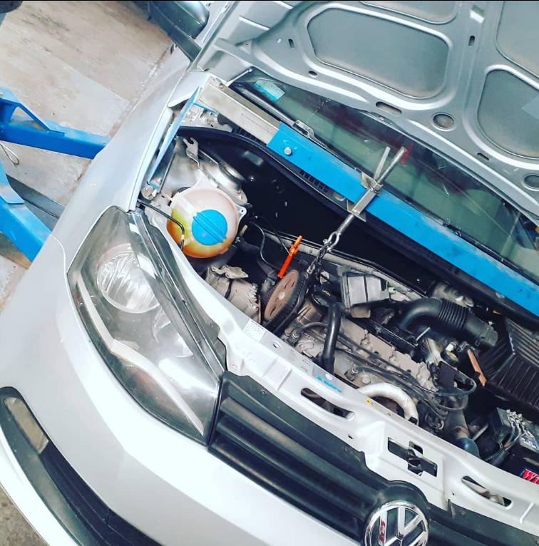
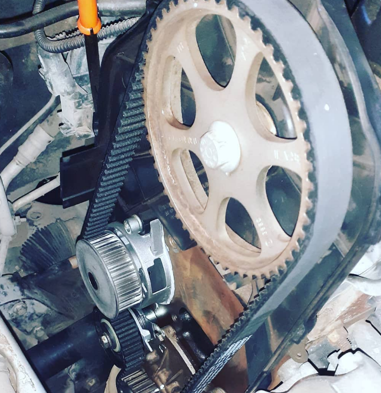

Bomba de agua

Nueva distribución
Somos un negocio familiar con más de 10 años de trayectoria. Nuestros clientes confían en nosotros como nosotros en ellos. Al venir a nuestro taller se le asegura calidad. Moreno, nuestro hogar, nos conoce bien, y gracias a que somos recomendados de boca en boca, nuestra clientela sigue creciendo y estamos profundamente agradecidos con ustedes. Para solicitar nuestros servicios, comuniquese a través de la pestaña de contacto. Los esperamos.